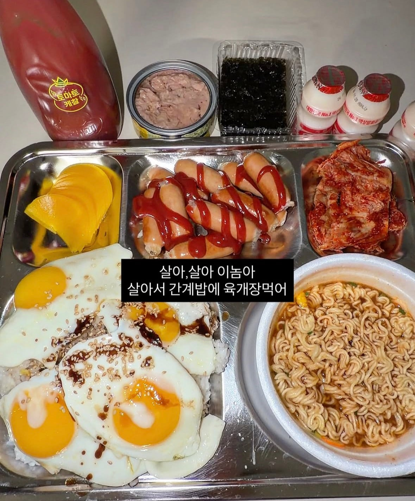

68 · 12 · 12 시간 전 · 원문

어흐
수집 당시 댓글 12개
혜리가이쁘다 · 12 시간 전
올해 연봉 5천넘었는데도 아직도
한끼에 참치1캔 이나 스팸1캔 뜯는거 사치라고 생각함
치킨 한마리 배달시키는거랑 다른느낌임
↳ 답글 · 디어센트 · 1 시간 전
5천이면 검소해야함
↳ 답글 · ㅁㄴㅇㄻㅇㄹ · 1 시간 전
고추참치 한캔 다먹어야지
repirdgod · 11 시간 전
아우 마운자로맞았더니 보기만해도 물리네
고개를숙인버팔로느린심장에모터달아 · 10 시간 전
식단 하고있는데 미칠거같네
댓글은똥인데폰은할부원금 · 10 시간 전
저거 다쳐먹을수 있었던 20대가 그립네 ㅋㅋㅋ
↳ 답글 · 댕하 · 3 시간 전
라면을 청국장이나 된찌로 바꿔만줘도 다 먹을듯
바나나맛분유 · 9 시간 전
흠 일단 이건 먹고
차가운밤 · 3 시간 전
와...개쩌네
지져쓰 · 2 시간 전
와이씨
위저드리 · 2 시간 전
어째 육개장 맛 변한 것 같던데 나만 그럼?
지하왕국 · 17 분 전
계란은 완숙으로 부탁해요
올해 연봉 5천넘었는데도 아직도
한끼에 참치1캔 이나 스팸1캔 뜯는거 사치라고 생각함
치킨 한마리 배달시키는거랑 다른느낌임